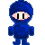
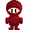

ABSTRACT Instructions
How To Start:
To start the game click the "Start Game" in the game window.
Controls
Use the mouse for game input.
-
Mouse Hover - Move your mouse across the game window if you're near the
assassin then the music should get louder. Vice versa if you're getting
further away from the assassin then music will get quieter.
-
Mouse Click - Click the spot where you think the assassin is hidding/invisible.
Game Play
Find the invisible assassin through sound detection. If you're near the
assassin then the music should get louder as you move your mouse
further away from the assassin then music will get quieter.
Additions to game engine
-
Music/Sound - Sound has finally been added to the game engine.
Function has been implemented to change the volume of the music based on mouse distance to an area.
In the game its the enemy (red assassin).
Also, in the engine it has the function user can call to stop and change the music.
Characters
|

|

|
Blue Spy (Player)
|
Red Assassin (Enemy)
|
Music Credits
All music comes from the MMORPG game Mabinogi created by DevCat and published by Nexon.
-
Mabinogi, "farming"
-
Mabinogi, "NPC_Ffion"
-
Mabinogi, "NPC_Tin"
-
Mabinogi, "NPC_Gilmore"